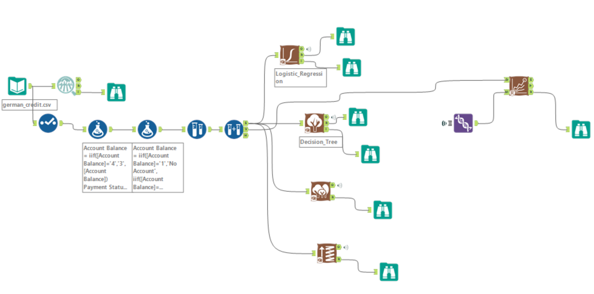
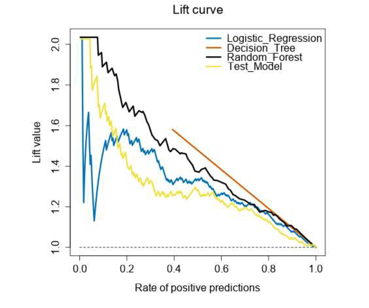
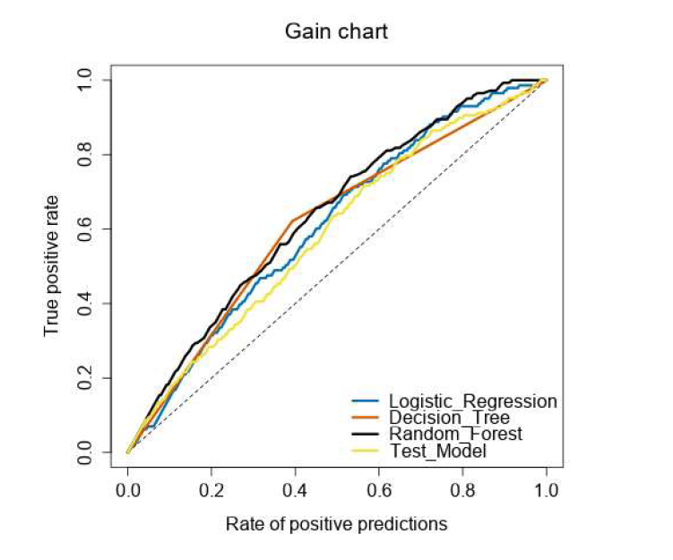
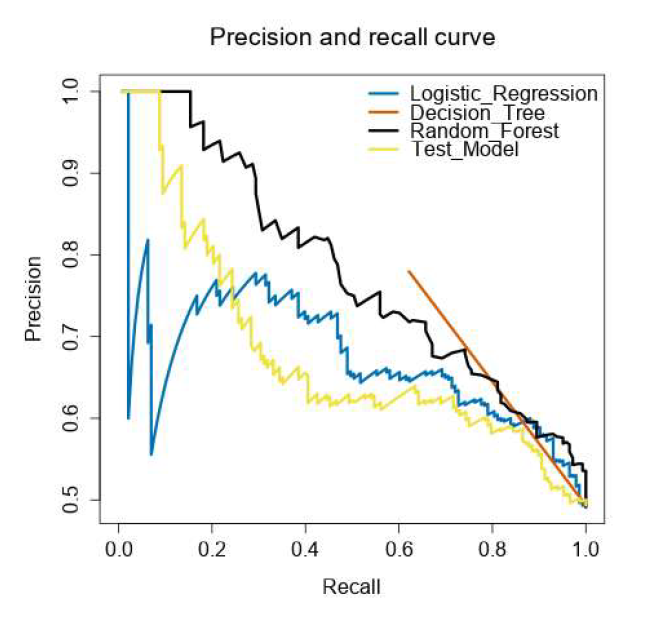
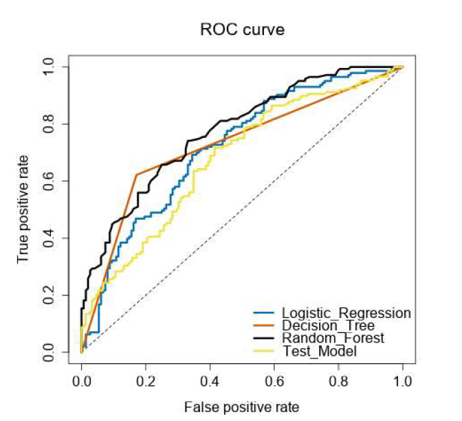

A multi-model classification study on the German Credit dataset — built in Alteryx — that prioritizes catching loan defaulters over raw accuracy, because in credit risk, a missed defaulter costs far more than a rejected good customer.
Predicting Credit Defaulters Before the Bank Says Yes
Personal Project
The Problem
PROBLEM STATEMENT
A bank needs to decide whether to approve a loan application. Approving a loan for someone who will default is a direct financial loss. Rejecting a good customer is a missed opportunity — but not a loss. The model must be tuned to catch defaulters aggressively, even at the cost of some false alarms.
This asymmetry in cost means we cannot evaluate the model purely on accuracy. The question we must ask is:
“Of all the people who will actually default — how many did the model correctly identify?”
HIGH COST ERROR
Predicted Creditworthy → Actually Defaults
Bank approves the loan. Customer defaults. Bank loses principal + interest. Real financial loss.
LOW COST ERROR
Predicted Non-Creditworthy → Actually Fine
Bank rejects a good customer. Missed revenue, but no capital is lost. Acceptable tradeoff.
Pipeline
Built entirely in Alteryx. Each step was deliberate — feature cleanup, category collapsing, oversampling the minority class, then training four models side by side.

1
Feature Selection — Select Tool
Started with 20 features. Dropped 6 that were low signal for credit risk or had poor data quality.
Account Balance
Duration of Credit
Payment Status
Purpose
Credit Amount
Value Savings/Stocks
Employment Length
Instalment %
Sex & Marital Status
Guarantors
No of Credits
Occupation
Concurrent Credits
Age
Duration in Address
Valuable Asset
Type of Apartment
No of Dependents
Telephone
Foreign Worker
2
Category Binning — Formula Tool (Pass 1)
Collapsed sparse categories to reduce noise. Example: Account Balance values 3 and 4 merged into one group; Payment Status values 0 and 1 merged into “Some Problems”.
// Account Balance: merge categories 3 & 4
IIF([Account Balance]='4', '3', [Account Balance])
// Employment: merge short tenures (1 & 2 → "under 1yr")
IIF([Length of current employment]='1'
OR [Length of current employment]='2', '1',
[Length of current employment])
// Concurrent Credits: binary (at this bank vs other)
IIF([Concurrent Credits]!='3', '1', [Concurrent Credits])
3
Human-Readable Labels — Formula Tool (Pass 2)
Converted numeric codes to meaningful labels for model interpretability and reporting.
// Account Balance: numeric → label
IIF([Account Balance]='1', 'No Account',
IIF([Account Balance]='2', 'None', 'Some Balance'))
// Creditability: target variable label
IIF([Creditability]='1', 'Creditworthy', 'Non-Creditworthy')
// Purpose: group into meaningful loan types
IIF([Purpose]='1', 'New Car',
IIF([Purpose]='2', 'Used Car',
IIF([Purpose]='3', 'Home Related', 'Other')))
4
Oversampling — Minority Class
The dataset was imbalanced — more creditworthy than non-creditworthy applicants. Oversampled the Non-Creditworthy class at 50% to give the model enough examples of defaulters to learn from. This is critical: without it, the model would bias toward predicting everyone as creditworthy.
5
Train / Validation Split — 50:50
Used Alteryx Create Samples tool to split into 50% estimation (training) and 50% validation. Applied after oversampling to prevent data leakage.
6
Model Training — 4 Models in Parallel
Trained Logistic Regression, Decision Tree, Random Forest, and a Boosted Model simultaneously. All fed into a single Model Comparison tool to evaluate on the same validation set.
What to Look for in the Results
Overall accuracy is the wrong metric here. A model that always predicts “Creditworthy” would get ~70% accuracy on a typical credit dataset — but it would catch zero defaulters. Here’s what actually matters:
PRIMARY METRIC
Recall
Non-Creditworthy class
Confusion Matrix — What Each Cell Means
| Predicted: Good | Predicted: Defaulter | |
|---|---|---|
| Actual: Good | ✓ True NegativeCorrectly approved | False PositiveGood customer rejected |
| Actual: Defaulter | ⚠ False NegativeDefaulter approved — COSTLY | ✓ True PositiveDefaulter caught |
False Negatives are the most expensive error. This is a defaulter the model missed — the bank approved them and will lose money. Minimizing this cell is the primary goal.
Metric Priority for This Problem
1. Recall (Non-Creditworthy) — Most Important
Of all actual defaulters, how many did the model catch? A high recall means fewer defaulters slip through. This is the number the bank cares about most.
2. Precision (Non-Creditworthy)
Of all applicants the model flagged as defaulters, how many actually were? Low precision means too many good customers are being rejected — a business cost, but less severe than missed defaulters.
3. Lift Curve — Ranking Quality
Shows how much better the model is at ranking defaulters to the top compared to random. A lift of 2.0 at 10% means the model finds twice as many defaulters in the top 10% of predictions vs a random list.
4. AUC-ROC — Overall Discrimination
Measures how well the model separates creditworthy from non-creditworthy across all thresholds. Useful for comparing models, but less actionable than recall for this specific problem.
Model Results
All four models were evaluated on the same held-out validation set using Alteryx’s Model Comparison tool. Charts below show performance across Lift, Gain, Precision-Recall, and ROC.

Lift Curve
Random Forest reaches lift ~2.0 at low prediction rates — it correctly ranks defaulters to the top of the list, doubling the hit rate vs random selection.
Random Forest wins
Gain Chart
Confirms Random Forest captures the highest proportion of true defaulters earliest. By the time you’ve reviewed 40% of predictions, RF has already found ~80% of all defaulters.
Random Forest wins
Precision–Recall Curve
Random Forest maintains the highest precision across most recall levels. Decision Tree starts strong but precision drops fast as recall increases.
Random Forest wins
ROC Curve
Random Forest has the largest area under the curve, confirming the best overall discrimination between creditworthy and non-creditworthy applicants.
Random Forest winsModel Comparison Summary
| MODEL | LIFT (early) | ROC AUC | RECALL — DEFAULTERS | NOTES |
|---|---|---|---|---|
| Random Forest | ~2.0 | Highest | Best | Consistent winner across all four charts |
| Decision Tree | ~2.0 (brief) | Competitive | Moderate | Strong early lift but precision drops fast |
| Logistic Regression | ~1.6 | Good | Moderate | Stable but weaker at ranking defaulters early |
| Boosted Model (Test) | ~1.8 (drops fast) | Below RF | Lower | Underperforms relative to expectations |
Key Takeaways
Random Forest is the recommended model
It wins on every evaluation metric — lift, gain, precision-recall, and ROC. It also benefits from ensemble averaging, which reduces the risk of overfitting that the single Decision Tree faces.
Oversampling was essential
Without oversampling the Non-Creditworthy class, all models would have been biased toward predicting everyone as creditworthy — achieving high accuracy while missing most defaulters.
Accuracy alone is misleading
In imbalanced classification problems like credit risk, a model optimized for accuracy can still be commercially useless. The evaluation framework must match the business cost structure.
Tools Used
Alteryx Designer
Select Tool
Formula Tool
Oversample Tool
Create Samples
Logistic Regression
Decision Tree
Random Forest
Boosted Model
Model Comparison